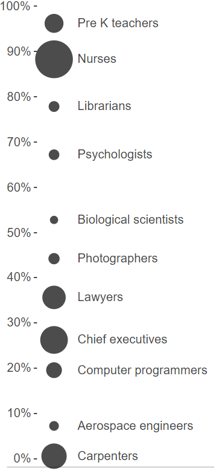

Introduction
Our success, happiness, and wellbeing are never fully of our own making. Others’ decisions can profoundly affect the course of our lives: whether to admit us to a particular school, offer us a job, or grant us a mortgage. Arbitrary, inconsistent, or faulty decision-making thus raises serious concerns because it risks limiting our ability to achieve the goals that we have set for ourselves and access the opportunities for which we are qualified.
So how do we ensure that these decisions are made the right way and for the right reasons? While there’s much to value in fixed rules, applied consistently, good decisions take available evidence into account. We expect admissions, employment, and lending decisions to rest on factors that are relevant to the outcome of interest.
Identifying details that are relevant to a decision might happen informally and without much thought: employers might observe that people who study math seem to perform particularly well in the financial industry. But they could test these observations against historical evidence by examining the degree to which one’s major correlates with success on the job. This is the traditional work of statistics—and it promises to provide a more reliable basis for decision-making by quantifying how much weight to assign certain details in our determinations.
Decades of research have compared the accuracy of statistical models to the judgments of humans, even experts with years of experience, and found that in many situations data-driven decisions trounce those based on intuition or expertise.Robyn M Dawes, David Faust, and Paul E Meehl, “Clinical Versus Actuarial Judgment,” Science 243, no. 4899 (1989): 1668–74.
These results have been welcomed as a way to ensure that the high-stakes decisions that shape our life chances are both accurate and fair.
Machine learning promises to bring greater discipline to decision-making because it offers to uncover factors that are relevant to decision-making that humans might overlook, given the complexity or subtlety of the relationships in historical evidence. Rather than starting with some intuition about the relationship between certain factors and an outcome of interest, machine learning lets us defer the question of relevance to the data themselves: which factors—among all that we have observed—bear a statistical relationship to the outcome.
Uncovering patterns in historical evidence can be even more powerful than this might seem to suggest. Recent breakthroughs in computer vision—specifically object recognition—reveal just how much pattern-discovery can achieve. In this domain, machine learning has helped to overcome a strange fact of human cognition: while we may be able to effortlessly identify objects in a scene, we are unable to specify the full set of rules that we rely upon to make these determinations. We cannot hand code a program that exhaustively enumerates all the relevant factors that allow us to recognize objects from every possible perspective or in all their potential visual configurations. Machine learning aims to solve this problem by abandoning the attempt to teach a computer through explicit instruction in favor of a process of learning by example. By exposing the computer to many examples of images containing pre-identified objects, we hope the computer will learn the patterns that reliably distinguish different objects from one another and from the environments in which they appear.
This can feel like a remarkable achievement, not only because computers can now execute complex tasks but also because the rules for deciding what appears in an image seem to emerge from the data themselves.
But there are serious risks in learning from examples. Learning is not a process of simply committing examples to memory. Instead, it involves generalizing from examples: honing in on those details that are characteristic of (say) cats in general, not just the specific cats that happen to appear in the examples. This is the process of induction: drawing general rules from specific examples—rules that effectively account for past cases, but also apply to future, as yet unseen cases, too. The hope is that we’ll figure out how future cases are likely to be similar to past cases, even if they are not exactly the same.
This means that reliably generalizing from historical examples to future cases requires that we provide the computer with good examples: a sufficiently large number of examples to uncover subtle patterns; a sufficiently diverse set of examples to showcase the many different types of appearances that objects might take; a sufficiently well-annotated set of examples to furnish machine learning with reliable ground truth; and so on. Thus, evidence-based decision-making is only as reliable as the evidence on which it is based, and high quality examples are critically important to machine learning. The fact that machine learning is “evidence-based” by no means ensures that it will lead to accurate, reliable, or fair decisions.
This is especially true when using machine learning to model human behavior and characteristics. Our historical examples of the relevant outcomes will almost always reflect historical prejudices against certain social groups, prevailing cultural stereotypes, and existing demographic inequalities. And finding patterns in these data will often mean replicating these very same dynamics.
We write this book as machine learning begins to play a role in especially consequential decision-making. In the criminal justice system, defendants are assigned statistical scores that are intended to predict the risk of committing future crimes, and these scores inform decisions about bail, sentencing, and parole. In the commercial sphere, firms use machine learning to analyze and filter resumes of job applicants. And statistical methods are of course the bread and butter of lending, credit, and insurance underwriting.
At the same time, machine learning powers everyday applications that might seem frivolous in comparison but collectively have a powerful effect on shaping our culture: search engines, news recommenders, and ad targeting algorithms influence our information diet and our worldviews; chatbots and social recommendation engines mediate our interactions with the world.
This book is an attempt to survey the risks in these and many other applications of machine learning, and to provide a critical review of an emerging set of proposed solutions. It will show how even well-intentioned applications of machine learning might give rise to objectionable results. And it will introduce formal methods for characterizing these problems and assess various computational methods for addressing them.
Demographic disparities
Amazon uses a data-driven system to determine the neighborhoods in which to offer free same-day delivery.We don’t know the details of how Amazon’s system works, and in particular we don’t know to what extent it uses machine learning. The same is true of many other systems reported on in the press. Nonetheless, we’ll use these as motivating examples when a machine learning system for the task at hand would plausibly show the same behavior.
A 2016 study found stark disparities in the demographic makeup of these neighborhoods: in many U.S. cities, white residents were more than twice as likely as black residents to live in one of the qualifying neighborhoods.David Ingold and Spencer Soper, “Amazon Doesn’t Consider the Race of Its Customers. Should It?” (https://www.bloomberg.com/graphics/2016-amazon-same-day/, 2016).
In Chapter 2 we’ll see how to make our intuition about demographic disparities mathematically precise, and we’ll see that there are many possible ways of measuring these inequalities. The pervasiveness of such disparities in machine learning applications is a key concern of this book.
When we observe disparities, it doesn’t imply that the designer of the system intended for such inequalities to arise. Looking beyond intent, it’s important to understand when observed disparities can be considered to be discrimination. In turn, two key questions to ask are whether the disparities are justified and whether they are harmful. These questions rarely have simple answers, but the extensive literature on discrimination in philosophy and sociology can help us reason about them.
To understand why the racial disparities in Amazon’s system might be harmful, we must keep in mind the history of racial prejudice in the United States, its relationship to geographic segregation and disparities, and the perpetuation of those inequalities over time. Amazon argued that its system was justified because it was designed based on efficiency and cost considerations and that race wasn’t an explicit factor. Nonetheless, it has the effect of providing different opportunities to consumers at racially disparate rates. The concern is that this might contribute to the perpetuation of long-lasting cycles of inequality. If, instead, the system had been found to be partial to ZIP codes ending in an odd digit, it would not have triggered a similar outcry.
The term bias is often used to refer to demographic disparities in algorithmic systems that are objectionable for societal reasons. We’ll avoid using this sense of the word bias in this book, since it means different things to different people. There’s a more traditional use of the term bias in statistics and machine learning. Suppose that Amazon’s estimates of delivery dates/times were consistently too early by a few hours. This would be a case of statistical bias. A statistical estimator is said to be biased if its expected or average value differs from the true value that it aims to estimate. Statistical bias is a fundamental concept in statistics, and there is a rich set of established techniques for analyzing and avoiding it.
There are many other measures that quantify desirable statistical properties of a predictor or an estimator, such as precision, recall, and calibration. These are similarly well understood; none of them require any knowledge of social groups and are relatively straightforward to measure. The attention to demographic criteria in statistics and machine learning is a relatively new direction. This reflects a change in how we conceptualize machine learning systems and the responsibilities of those building it. Is our goal to faithfully reflect the data? Or do we have an obligation to question the data, and to design our systems to conform to some notion of equitable behavior, regardless of whether or not that’s supported by the data currently available to us? These perspectives are often in tension, and the difference between them will become clearer when we delve into stages of machine learning.
The machine learning loop
Let’s study the pipeline of machine learning and understand how demographic disparities propagate through it. This approach lets us glimpse into the black box of machine learning and will prepare us for the more detailed analyses in later chapters. Studying the stages of machine learning is crucial if we want to intervene to minimize disparities.
The figure below shows the stages of a typical system that produces outputs using machine learning. Like any such diagram, it is a simplification, but it is useful for our purposes.

The first stage is measurement, which is the process by which the state of the world is reduced to a set of rows, columns, and values in a dataset. It’s a messy process, because the real world is messy. The term measurement is misleading, evoking an image of a dispassionate scientist recording what she observes, whereas we’ll see that it requires subjective human decisions.
The ‘learning’ in machine learning refers to the next stage, which is to turn that data into a model. A model summarizes the patterns in the training data; it makes generalizations. A model could be generated using supervised learning via an algorithm such as Support Vector Machines, or using unsupervised learning via an algorithm such as k-means clustering. It could take many forms: a hyperplane or a set of regions in n-dimensional space, or a set of distributions. It is typically represented as a set of weights or parameters.
The next stage is the action we take based on the model’s predictions, which are applications of the model to new, unseen inputs. ‘Prediction’ is another misleading term—while it does sometimes involve trying to predict the future (“is this patient at high risk for cancer?”), usually it doesn’t. It can take the form of classification (determine whether a piece of email is spam), regression (assigning risk scores to defendants), or information retrieval (finding documents that best match a search query).
The corresponding actions in these three applications might be: depositing the email in the user’s inbox or spam folder, deciding whether to set bail for the defendant’s pre-trial release, and displaying the retrieved search results to the user. They may differ greatly in their significance to the individual, but they have in common that the collective responses of individuals to these decisions alter the state of the world—that is, the underlying patterns that the system aims to model.
Some machine learning systems record feedback from users (how users react to actions) and use them to refine the model. For example, search engines track what users click on as an implicit signal of relevance or quality. Feedback can also occur unintentionally, or even adversarially; these are more problematic, as we’ll explore later in this chapter.
The state of society
In this book, we’re concerned with applications of machine learning that involve data about people. In these applications, the available training data will likely encode the demographic disparities that exist in our society. For example, the figure shows the gender breakdown of a sample of occupations in the United States, based on data released by the Bureau of Labor Statistics for the year 2017.The percentage of women in a sample of occupations in the United States. The area of the bubble represents the number of workers.

Unsurprisingly, many occupations have stark gender imbalances. If we’re building a machine learning system that screens job candidates, we should be keenly aware that this is the baseline we’re starting from. It doesn’t necessarily mean that the outputs of our system will be inaccurate or discriminatory, but throughout this chapter we’ll see how it complicates things.
Why do these disparities exist? There are many potentially contributing factors, including a history of explicit discrimination, implicit attitudes and stereotypes about gender, and differences in the distribution of certain characteristics by gender. We’ll see that even in the absence of explicit discrimination, stereotypes can be self-fulfilling and persist for a long time in society. As we integrate machine learning into decision-making, we should be careful to ensure that ML doesn’t become a part of this feedback loop.
What about applications that aren’t about people? Consider “Street Bump,” a project by the city of Boston to crowdsource data on potholes. The smartphone app automatically detects pot holes using data from the smartphone’s sensors and sends the data to the city. Infrastructure seems like a comfortably boring application of data-driven decision-making, far removed from the ethical quandaries we’ve been discussing.
And yet! Kate Crawford points out that the data reflect the patterns of smartphone ownership, which are higher in wealthier parts of the city compared to lower-income areas and areas with large elderly populations.Kate Crawford, “The Hidden Biases in Big Data,” Harvard Business Review 1 (2013).
The lesson here is that it’s rare for machine learning applications to not be about people. In the case of Street Bump, the data is collected by people, and hence reflects demographic disparities; besides, the reason we’re interested in improving infrastructure in the first place is its effect on people’s lives.
To drive home the point that most machine learning applications involve people, we analyzed Kaggle, a well-known platform for data science competitions. We focused on the top 30 competitions sorted by prize amount. In 14 of these competitions, we observed that the task is to make decisions about individuals. In most of these cases, there exist societal stereotypes or disparities that may be perpetuated by the application of machine learning. For example, the Automated Essay ScoringKaggle, “The Hewlett Foundation: Automated Essay Scoring” (https://www.kaggle.com/c/asap-aes, 2012).
task seeks algorithms that attempt to match the scores of human graders of student essays. Students’ linguistic choices are signifiers of social group membership, and human graders are known to sometimes have biases based on such factors.Rema N Hanna and Leigh L Linden, “Discrimination in Grading,” American Economic Journal: Economic Policy 4, no. 4 (2012): 146–68; Maresa Sprietsma, “Discrimination in Grading: Experimental Evidence from Primary School Teachers,” Empirical Economics 45, no. 1 (2013): 523–38.
Thus, because human graders must provide the original labels, automated grading systems risk enshrining any such biases that are captured in the training data.
In a further 5 of the 30 competitions, the task did not call for making decisions about people, but decisions made using the model would nevertheless directly impact people. For example, one competition sponsored by real-estate company Zillow calls for improving the company’s “Zestimate” algorithm for predicting home sale prices. Any system that predicts a home’s future sale price (and publicizes these predictions) is likely to create a self-fulfilling feedback loop in which homes predicted to have lower sale prices deter future buyers, suppressing demand and lowering the final sale price.
In 9 of the 30 competitions, we did not find an obvious, direct impact on people, such as a competition on predicting ocean health (of course, even such competitions have indirect impacts on people, due to actions that we might take on the basis of the knowledge gained). In two cases, we didn’t have enough information to make a determination.
To summarize, human society is full of demographic disparities, and training data will likely reflect these. We’ll now turn to the process by which training data is constructed, and see that things are even trickier.
The trouble with measurement
The term measurement suggests a straightforward process, calling to mind a camera objectively recording a scene. In fact, measurement is fraught with subjective decisions and technical difficulties.
Consider a seemingly straightforward task: measuring the demographic diversity of college campuses. A recent New York Times article aimed to do just this, and was titled “Even With Affirmative Action, Blacks and Hispanics Are More Underrepresented at Top Colleges Than 35 Years Ago.”Jeremy Ashkenas, Haeyoun Park, and Adam Pearce, “Even with Affirmative Action, Blacks and Hispanics Are More Underrepresented at Top Colleges Than 35 Years Ago” (https://www.nytimes.com/interactive/2017/08/24/us/affirmative-action.html, 2017).
The authors argue that the gap between enrolled black and Hispanic freshmen and the black and Hispanic college-age population has grown over the past 35 years. To support their claim, they present demographic information for more than 100 American universities and colleges from the year 1980 to 2015, and show how the percentages of black, Hispanic, Asian, white, and multiracial students have changed over the years. Interestingly, the multiracial category was only recently introduced in 2008, but the comparisons in the article ignore the introduction of this new category. How many students who might have checked the “white” or “black” box checked the “multiracial” box instead? How might this have affected the percentages of “white” and “black” students at these universities? Furthermore, individuals’ and society’s conception of race changes over time. Would a person with black and Latino parents be more inclined to self-identify as black in 2015 than in the 1980s? The point is that even a seemingly straightforward question about trends in demographic diversity is impossible to answer without making some assumptions, and illustrates the difficulties of measurement in a world that resists falling neatly into a set of checkboxes. Race is not a stable category; how we measure race often changes how we conceive of it, and changing conceptions of race may force us to alter what we measure.
To be clear, this situation is typical: measuring almost any attribute about people is similarly subjective and challenging. If anything, things are more chaotic when machine learning researchers have to create categories, as is often the case.
One area where machine learning practitioners often have to define new categories is in defining the target variable.Solon Barocas and Andrew D. Selbst, “Big Data’s Disparate Impact,” California Law Review 104 (2016).
This is the outcome that we’re trying to predict – will the defendant recidivate if released on bail? Will the candidate be a good employee if hired? And so on.
Biases in the training set’s target variable are especially critical, because they are guaranteed to bias the predictions (not necessarily so with other attributes). But the target variable is arguably the hardest from a measurement standpoint, because it is often a construct that is made up for the purposes of the problem at hand rather than one that is widely understood and measured. For example, “creditworthiness” is a construct that was created in the context of the problem of how to successfully extend credit to consumers;Barocas and Selbst.
it is not an intrinsic property that people either possess or lack.
If our target variable is the idea of a “good employee”, we might use performance review scores to quantify it. This means that our data inherits any biases present in managers’ evaluations of their reports. Another example: the use of computer vision to automatically rank people’s physical attractiveness.Lizzie Plaugic, “FaceApp’s Creator Apologizes for the App’s Skin-Lightening ‘Hot’ Filter” (The Verge. https://www.theverge.com/2017/4/25/15419522/faceapp-hot-filter-racist-apology, 2017); Rowland Manthorpe, “The Beauty.ai Robot Beauty Contest Is Back” (Wired UK. https://www.wired.co.uk/article/robot-beauty-contest-beauty-ai, 2017).
The training data consists of human evaluation of attractiveness, and, unsurprisingly, all these classifiers showed a preference for lighter skin.
In some cases we might be able to get closer to a more objective definition for a target variable, at least in principle. For example, in criminal risk assessment, the training data is not judges’ decisions on who should get bail, but rather based on who actually went on to commit a crime. But there’s one big caveat—we can’t really measure who committed a crime, so we use arrests as a proxy. This replaces the biases of judges with the biases of policing. On the other hand, if our target variable is whether the defendant appears or fails to appear in court for trial, we would be able to measure it directly with perfect accuracy. That said, we may still have concerns about a system that treats defendants differently based on predicted probability of appearance, given that some reasons for failing to appear are less objectionable than others (trying to hold down a job that would not allow for time off versus trying to avoid prosecution).
In hiring, instead of relying on performance reviews for (say) a sales job, we might rely on the number of sales closed. But is that an objective measurement or is it subject to the biases of the potential customers (who might respond more positively to certain salespeople than others) and workplace conditions (which might be a hostile environment for some, but not others)?
In some applications, researchers repurpose an existing scheme of classification to define the target variable rather than creating one from scratch. For example, an object recognition system can be created by training a classifier on ImageNet, a database of images organized in a hierarchy of concepts.J. Deng et al., “ImageNet: A Large-Scale Hierarchical Image Database,” in CVPR09, 2009.
ImageNet’s hierarchy comes from Wordnet, a database of words, categories, and the relationships among them.George A Miller, “WordNet: A Lexical Database for English,” Communications of the ACM 38, no. 11 (1995): 39–41.
Wordnet’s authors in turn imported the word lists from a number of older sources, such as thesauri. As a result, WordNet (and ImageNet) categories contain numerous outmoded words and associations, such as occupations that no longer exist and stereotyped gender associations. Thus, ImageNet-trained object recognition systems assume a categorization of the world that is mismatched with the world in which they operate.
We think of technology changing rapidly and society being slow to adapt, but at least in this instance, the categorization scheme at the heart of much of today’s machine learning technology has been frozen in time while social norms have changed rapidly.
Our favorite example of measurement bias has to do with cameras, which we referenced at the beginning of the section as the exemplar of dispassionate observation and recording. But are they?
The visual world has an essentially infinite bandwidth compared to what can be captured by cameras, whether film or digital, which means that photography technology involves a series of choices about what is relevant and what isn’t, and transformations of the captured data based on those choices. Both film and digital cameras have historically been more adept at photographing lighter-skinned individuals.Lorna Roth, “Looking at Shirley, the Ultimate Norm: Colour Balance, Image Technologies, and Cognitive Equity,” Canadian Journal of Communication 34, no. 1 (2009): 111.
One reason is the default settings such as color balance which were optimized for lighter skin tones. Another, deeper reason is the limited “dynamic range” of cameras, which makes it hard to capture brighter and darker tones in the same image. This started changing in the 1970s, in part due to complaints from furniture companies and chocolate companies about the difficulty of photographically capturing the details of furniture and chocolate respectively! Another impetus came from the increasing diversity of television subjects at this time.
When we go from individual images to datasets of images, we introduce another layer of potential biases. Consider the image datasets that are used to train today’s computer vision systems for tasks such as object recognition. If these datasets were samples of an underlying visual world, we would expect that a computer vision system trained on one such dataset would do well on another dataset. But in reality, we observe a big drop in accuracy when we train and test on different datasets.Antonio Torralba and Alexei A Efros, “Unbiased Look at Dataset Bias,” in Computer Vision and Pattern Recognition (Cvpr), 2011 Ieee Conference on (IEEE, 2011), 1521–8.
This shows that these datasets are biased relative to each other in a statistical sense, and is a good starting point for investigating whether these biases include cultural stereotypes.
It’s not all bad news: machine learning can in fact help mitigate measurement biases. Returning to the issue of dynamic range in cameras, computational techniques, including machine learning, are making it possible to improve the representation of tones in images.Zicheng Liu, Cha Zhang, and Zhengyou Zhang, “Learning-Based Perceptual Image Quality Improvement for Video Conferencing,” in Multimedia and Expo, 2007 Ieee International Conference on (IEEE, 2007), 1035–8; Liad Kaufman, Dani Lischinski, and Michael Werman, “Content-Aware Automatic Photo Enhancement,” in Computer Graphics Forum, vol. 31, 8 (Wiley Online Library, 2012), 2528–40; Nima Khademi Kalantari and Ravi Ramamoorthi, “Deep High Dynamic Range Imaging of Dynamic Scenes,” ACM Trans. Graph 36, no. 4 (2017): 144.
Another example comes from medicine: diagnoses and treatments are sometimes personalized by race. But it turns out that race is used as a crude proxy for ancestry and genetics, and sometimes environmental and behavioral factors.Vence L Bonham, Shawneequa L Callier, and Charmaine D Royal, “Will Precision Medicine Move Us Beyond Race?” The New England Journal of Medicine 374, no. 21 (2016): 2003; James F Wilson et al., “Population Genetic Structure of Variable Drug Response,” Nature Genetics 29, no. 3 (2001): 265.
If we can measure these genetic and lifestyle factors and incorporate them—instead of race—into statistical models of disease and drug response, we can increase the accuracy of diagnoses and treatments while mitigating racial biases.
To summarize, measurement involves defining your variables of interest, the process for interacting with the real world and turning your observations into numbers, and then actually collecting the data. Usually machine learning practitioners don’t think about these steps, because someone else has already done those things. And yet it is crucial to understand the provenance of the data. Even if someone else has collected the data for you, it’s almost always too messy for your algorithms to handle, hence the dreaded “data cleaning” step. But the messiness of the real world isn’t just an annoyance to be dealt with by cleaning, it is instead a manifestation of the limitations of data-driven techniques.
From data to models
We’ve seen that training data reflects the disparities, distortions, and biases from the real world and the measurement process. This leads to an obvious question: when we learn a model from such data, are these disparities preserved, mitigated, or exacerbated?
Statistical methods, including machine learning, are good at calibration: ensuring that the distribution of outputs matches the prior probabilities. By contrast, human intuition is notoriously poor at accounting for priors, and this is a major reason that statistical predictions perform better in a wide variety of settings. But calibration also means that by default, we should expect our models to faithfully reflect disparities found in the input data.
Here’s another way to think about it. Some patterns in the training data (smoking is associated with cancer) represent knowledge that we wish to mine using machine learning, while other patterns (girls like pink and boys like blue) represent stereotypes that we might wish to avoid learning. But learning algorithms have no general way to distinguish between these two types of patterns, because they are the result of social norms and moral judgments. Absent specific intervention, machine learning will extract stereotypes, including incorrect and harmful ones, in the same way that it extracts knowledge.
A telling example of this comes from machine translation. The screenshot on the right shows the result of translating sentences from English to Turkish and back.Translating from English to Turkish, then back to English injects gender stereotypes.**

The same stereotyped translations result for many pairs of languages and other occupation words in all translation engines we’ve tested. It’s easy to see why. Turkish has gender neutral pronouns, and when translating such a pronoun to English, the system picks the sentence that best matches the statistics of the training set (which is typically a large, minimally curated corpus of historical text and text found on the web).
When we build a statistical model of language from such text, we should expect the gender associations of occupation words to roughly mirror real-world labor statistics. In addition, because of the male-as-norm biasMarcel Danesi, Dictionary of Media and Communications (Routledge, 2014).
(the use of male pronouns when the gender is unknown) we should expect translations to favor male pronouns. It turns out that when we repeat the experiment with dozens of occupation words, these two factors—labor statistics and the male-as-norm bias—together almost perfectly predict which pronoun will be returned.Aylin Caliskan, Joanna J. Bryson, and Arvind Narayanan, “Semantics Derived Automatically from Language Corpora Contain Human-Like Biases,” Science 356, no. 6334 (2017): 183–86.
Here’s a tempting response to the observation that models reflect data biases. Suppose we’re building a model for scoring resumes for a programming job. What if we simply withhold gender from the data? Surely the resulting model can’t be gender biased? Unfortunately, it’s not that simple, because of the problem of proxiesBarocas and Selbst, “Big Data’s Disparate Impact.”
or redundant encodings,Moritz Hardt, “How Big Data Is Unfair” (https://medium.com/@mrtz/how-big-data-is-unfair-9aa544d739de, 2014).
as we’ll discuss in the next chapter. There are any number of other attributes in the data that might correlate with gender. In our culture, the age at which someone starts programming is well known to be correlated with gender. This illustrates another problem with proxies: they may be genuinely relevant to the decision at hand. How long someone has been programming is a factor that gives us valuable information about their suitability for a programming job, but it also reflects the reality of gender stereotyping.
Finally, it’s also possible for the learning step to introduce demographic disparities that aren’t in the training data. The most common reason for this is the sample size disparity. If we construct our training set by sampling uniformly from the training data, then by definition we’ll have fewer data points about minorities. Of course, machine learning works better when there’s more data, so it will work less well for members of minority groups, assuming that members of the majority and minority groups are systematically different in terms of the prediction task.Hardt.
Worse, in many settings minority groups are underrepresented relative to population statistics. For example, minority groups are underrepresented in the tech industry. Different groups might also adopt technology at different rates, which might skew datasets assembled form social media. If training sets are drawn from these unrepresentative contexts, there will be even fewer training points from minority individuals. For example, many products that incorporate face-detection technology have been reported to have trouble with non-Caucasian faces, and it’s easy to guess why.Hardt.
When we develop machine-learning models, we typically only test their overall accuracy; so a “5% error” statistic might hide the fact that a model performs terribly for a minority group. Reporting accuracy rates by group will help alert us to problems like the above example. In the next chapter, we’ll look at metrics that quantify the error-rate disparity between groups.
There’s one application of machine learning where we find especially high error rates for minority groups: anomaly detection. This is the idea of detecting behavior that deviates from the norm as evidence of abuse against a system. A good example is the Nymwars controversy, where Google, Facebook, and other tech companies aimed to block users who used uncommon (hence, presumably fake) names.
Further, suppose that in some cultures, most people receive names from a small set of names, whereas in other cultures, names might be more diverse, and it might be common for names to be unique. For users in the latter culture, a popular name would be more likely to be fake. In other words, the same feature that constitutes evidence towards a prediction in one group might constitute evidence against the prediction for another group.Hardt.
If we’re not careful, learning algorithms will generalize based on the majority culture, leading to a high error rate for minority groups. This is because of the desire to avoid overfitting, that is, picking up patterns that arise due to random noise rather than true differences. One way to avoid this is to explicitly model the differences between groups, although there are both technical and ethical challenges associated with this, as we’ll show in later chapters.
The pitfalls of action
Any real machine-learning system seeks to make some change in the world. To understand its effects, then, we have to consider it in the context of the larger socio-technical system in which it is embedded.
In Chapter 2, we’ll see that if a model is calibrated—it faithfully captures the patterns in the underlying data—predictions made using that model will inevitably have disparate error rates for different groups, if those groups have different base rates, that is, rates of positive or negative outcomes. In other words, understanding the properties of a prediction requires understanding not just the model, but also the population differences between the groups on which the predictions are applied.
Further, population characteristics can shift over time; this is a well-known machine learning phenomenon known as drift. If sub-populations change differently over time, that can introduce disparities. An additional wrinkle: whether or not disparities are objectionable may differ between cultures, and may change over time as social norms evolve.
When people are subject to automated decisions, their perception of those decisions depends not only on the outcomes but also the process of decision-making. An ethical decision-making process might require, among other things, the ability to explain a prediction or decision, which might not be feasible with black-box models.
A major limitation of machine learning is that it only reveals correlations, but we often use its predictions as if they reveal causation. This is a persistent source of problems. For example, an early machine learning system in healthcare famously learned the seemingly nonsensical rule that patients with asthma had lower risk of developing pneumonia. This was a true pattern in the data, but the likely reason was that asthmatic patients were more likely to receive in-patient care.Rich Caruana et al., “Intelligible Models for Healthcare: Predicting Pneumonia Risk and Hospital 30-Day Readmission,” in Proceedings of the 21th Acm Sigkdd International Conference on Knowledge Discovery and Data Mining (ACM, 2015), 1721–30.
So it’s not valid to use the prediction to decide whether or not to admit a patient. We’ll discuss causality in Chapter 4.
Another way to view this example is that the prediction affects the outcome (because of the actions taken on the basis of the prediction), and thus invalidates itself. The same principle is also seen in the the use of machine learning for predicting traffic congestion: if sufficiently many people choose their routes based on the prediction, then the route predicted to be clear will in fact be congested. The effect can also work in the opposite direction: the prediction might reinforce the outcome, resulting in feedback loops. To better understand how, let’s talk about the final stage in our loop: feedback.
Feedback and feedback loops
Many systems receive feedback when they make predictions. When a search engine serves results, it typically records the links that the user clicks on and how long the user spends on those pages, and treats these as implicit signals about which results were found to be most relevant. When a video sharing website recommends a video, it uses the thumbs up/down feedback as an explicit signal. Such feedback is used to refine the model.
But feedback is tricky to interpret correctly. If a user clicked on the first link on a page of search results, is that simply because it was first, or because it was in fact the most relevant? This is again a case of the action (the ordering of search results) affecting the outcome (the link(s) the user clicks on). This is an active area of research; there are techniques that aim to learn accurately from this kind of biased feedback.Thorsten Joachims, Adith Swaminathan, and Tobias Schnabel, “Unbiased Learning-to-Rank with Biased Feedback,” in Proceedings of the Tenth Acm International Conference on Web Search and Data Mining (ACM, 2017), 781–89.
Bias in feedback might also reflect cultural prejudices, which is of course much harder to characterize than the effects of the ordering of search results. For example, the clicks on the targeted ads that appear alongside search results might reflect gender and racial stereotypes. There’s a well-known study that hints at this: Google searches for black-sounding names such as “Latanya Farrell” were much more likely to results in ads for arrest records (“Latanya Farrell, Arrested?”) than searches for white-sounding names (“Kristen Haring”).Latanya Sweeney, “Discrimination in Online Ad Delivery,” Queue 11, no. 3 (March 2013): 10:10–10:29, https://doi.org/10.1145/2460276.2460278.
One potential explanation is that users are more likely to click on ads that conform to stereotypes, and the advertising system is optimized for maximizing clicks.
In other words, even feedback that’s designed into systems can lead to unexpected or undesirable biases. But there are many unintended ways in which feedback might arise, and these can be are more pernicious and harder to control. Let’s look at three.
Self-fulfilling predictions. Suppose a predictive policing system determines certain areas of a city to be at high risk for crime. More police officers might be deployed to such areas. Alternatively, officers in areas predicted to be high risk might be subtly lowering their threshold for stopping, searching, or arresting people—perhaps even unconsciously. Either way, the prediction will appear to be validated, even if it had been made purely based on data biases.
Here’s another example of how acting on a prediction can change the outcome. In the United States, some criminal defendants are released prior to trial, whereas for others, a bail amount is set as a precondition of release. Many defendants are unable to post bail. Does the release or detention affect the outcome of the case? Perhaps defendants who are detained face greater pressure to plead guilty. At any rate, how could one possibly test the causal impact of detention without doing an experiment? Intriguingly, we can take advantage of a pseudo-experiment, namely that defendants are assigned bail judges quasi-randomly, and some judges are stricter than others. Thus, pre-trial detention is partially random, in a quantifiable way. Studies using this technique have confirmed that detention indeed causes an increase in the likelihood of a conviction.Will Dobbie, Jacob Goldin, and Crystal Yang, “The Effects of Pre-Trial Detention on Conviction, Future Crime, and Employment: Evidence from Randomly Assigned Judges” (National Bureau of Economic Research, 2016).
If bail were set based on risk predictions, whether human or algorithmic, and we evaluated its efficacy by examining case outcomes, we would see a self-fulfilling effect.
Predictions that affect the training set. Continuing this example, predictive policing activity will leads to arrests, records of which might be added to the algorithm’s training set. These areas might then continue to appear to be at high risk of crime, and perhaps also other areas with a similar demographic composition, depending on the feature set used for predictions. The biases might even compound over time.
A 2016 paper analyzed a predictive policing algorithm by PredPol, one of the few to be published in a peer-reviewed journal.PredPol deserves praise for publicly releasing their algorithm, without which this research would not even have been possible.
By applying it to data derived from Oakland police records, they found that black people would be targeted for predictive policing of drug crimes at roughly twice the rate of whites, even though the two groups have roughly equal rates of drug use.Kristian Lum and William Isaac, “To Predict and Serve?” Significance 13, no. 5 (2016): 14–19.
Their simulation showed that this initial bias would be amplified by a feedback loop, with policing increasingly concentrated on targeted areas. This is despite the fact that the PredPol algorithm does not explicitly take demographics into account.
A more recent paper built on this idea and showed mathematically how feedback loops occur when data discovered on the basis of predictions are used to update the model.Danielle Ensign et al., “Runaway Feedback Loops in Predictive Policing,” arXiv Preprint arXiv:1706.09847, 2017.
The paper also shows how to tweak the model to avoid feedback loops: by quantifying how surprising an observation of crime is given the predictions, and only updating the model in response to surprising events.
Predictions that affect the phenomenon and society at large. Prejudicial policing on a large scale, algorithmic or not, will affect society over time, contributing to the cycle of poverty and crime. This is an extremely well-trodden thesis, and we’ll briefly review the sociological literature on durable inequality and the persistence of stereotypes in Chapter 3.
Let us remind ourselves that we deploy machine learning so that we can act on its predictions. It is hard to even conceptually eliminate the effects of predictions on outcomes, future training sets, the phenomena themselves, or society at large. The more central machine learning becomes in our lives, the stronger this effect.
Returning to the example of a search engine, in the short term it might be possible to extract an unbiased signal from user clicks, but in the long run, results that are returned more often will be linked to and thus rank more highly. As a side effect of fulfilling its purpose of retrieving relevant information, a search engine will necessarily change the very thing that it aims to measure, sort, and rank. Similarly, most machine learning systems will affect the phenomena that they predict. This is why we’ve depicted the machine learning process as a loop.
Throughout this book we’ll learn methods for mitigating societal biases in machine learning, but let us pause to consider that there are fundamental limits to what we can achieve, especially when we consider machine learning as a socio-technical system instead of a mathematical abstraction. The textbook model of training and test data being independent and identically distributed is a simplification, and might be unachievable in practice.
Getting concrete with a toy example
Now let’s look at a concrete setting, albeit a toy problem, to illustrate many of the ideas discussed so far, and some new ones.
Let’s say you’re on a hiring committee, making decisions based on just two attributes of each applicant: their college GPA and their interview score (we did say it’s a toy problem!). We formulate this as a machine-learning problem: the task is to use these two variables to predict some measure of the “quality” of an applicant. For example, it could be based on the average performance review score after two years at the company. We’ll assume we have data from past candidates that allows us to train a model to predict performance scores based on GPA and interview score.

Obviously, this is a reductive formulation—we’re assuming that an applicant’s worth can be reduced to a single number, and that we know how to measure that number. This is a valid criticism, and applies to most applications of data-driven decision-making today. But it has one big advantage: once we do formulate the decision as a prediction problem, statistical methods tend to do better than humans, even domain experts with years of training, in making decisions based on noisy predictors. The subject has been well researched, and we’ll study it in Chapter 3.
Given this formulation, the simplest thing we can do is to use linear regression to predict the average job performance rating from the two observed variables, and then use a cutoff based on the number of candidates we want to hire. The figure above shows what this might look like. In reality, the variables under consideration need not satisfy a linear relationship, thus suggesting the use of a non-linear model, which we avoid for simplicity.
As you can see in the figure, our candidates fall into two demographic groups, represented by triangles and squares.This binary categorization is a simplification for the purposes of our thought experiment. Such simplifications are also common in the research literature. Indeed, most proposed fairness interventions themselves start by assuming such a categorization. But when building real systems, enforcing rigid categories of people can be ethically questionable. This is not specific to machine learning, and a similar tension arises in many data-driven settings, such as the checkboxes for race on census forms or employment applications.
Note that the classifier didn’t take into account which group a candidate belonged to. Does this mean that the classifier is fair? We might hope that it is, based on the fairness-as-blindness idea, symbolized by the icon of Lady Justice wearing a blindfold. In this view, an impartial model—one that doesn’t use the group membership in the regression—is fair; a model that gives different scores to otherwise-identical members of different groups is discriminatory.
We’ll defer a richer understanding of what fairness means to Chapter 3, so let’s ask a simpler question: are candidates from the two groups equally likely to be positively classified? The answer is no: the triangles are more likely to be selected than the squares. That’s because data is a social mirror; the “ground truth” labels that we’re predicting—job performance ratings—are systematically lower for the squares than the triangles.
There are many possible reasons for this disparity. First, the managers who score the employees’ performance might have a bias against one group. Or the overall workplace might be biased against one group, preventing them from reaching their potential and leading to lower performance. Alternately, the disparity might originate before the candidates were hired. For example, it might arise from disparities in educational institutions attended by the two groups. Or there might be intrinsic differences between them. Of course, it might be a combination of these factors. We can’t tell from our data how much of the disparity is attributable to these different factors. In general, such a determination is methodologically hard, and requires causal reasoning.
For now, let’s assume that we have evidence that the level of demographic disparity produced by our selection procedure is unjustified, and we’re interested in intervening to decrease it. How could we do it? We observe that GPA is correlated with the demographic attribute—it’s a proxy. Perhaps we could simply omit that variable as a predictor? Unfortunately, we’d also cripple the accuracy of our model. In real datasets, most attributes tend to be proxies for demographic variables, and dropping them may not be a reasonable option.
Another crude approach is to pick different cutoffs so that candidates from both groups have the same probability of being hired. Or we could mitigate the demographic disparity instead of eliminating it, by decreasing the difference in the cutoffs.
Given the available data, there is no mathematically principled way to know which cutoffs to pick. In some situations there is a legal baseline: for example, guidelines from the U.S. Equal Employment Opportunity Commission state that if the probability of selection for two groups differs by more than 20%, it might constitute a sufficient disparate impact to initiate a lawsuit. But a disparate impact alone is not illegal; the disparity needs to be unjustified or avoidable for courts to find liability. Even these quantitative guidelines do not provide easy answers or bright lines.
At any rate, the pick-different-thresholds approach to mitigating disparities seems unsatisfying. It is no longer blind, and two candidates with the same observable attributes may receive different decisions depending on which group they are in.
But there are other possible interventions, and we’ll discuss one. To motivate it, let’s take a step back and ask why the company wants to decrease the demographic disparity in hiring.
One answer is rooted in justice to individuals and the specific social groups to which they belong. But a different answer comes from the firm’s selfish interests: diverse teams work better.David Rock and Heidi Grant, “Why Diverse Teams Are Smarter” (Harvard Business Review. https://hbr.org/2016/11/why-diverse-teams-are-smarter, 2016).
From this perspective, increasing the diversity of the cohort that is hired would benefit the firm and everyone in the cohort.
How do we operationalize diversity in a selection task? If we had a distance function between pairs of candidates, we could measure the average distance between selected candidates. As a strawman, let’s say we use the Euclidean distance based on the GPA and interview score. If we incorporated such a diversity criterion into the objective function, it would result in a model where the GPA is weighted less. This technique has the advantage of being blind: we didn’t explicitly consider the group membership, but as a side-effect of insisting on diversity of the other observable attributes, we have also improved demographic diversity. However, a careless application of such an intervention can easily go wrong: for example, the model might give weight to attributes that are completely irrelevant to the task.
More generally, there are many possible algorithmic interventions beyond picking different thresholds for different groups. In particular, the idea of a similarity function between pairs of individuals is a powerful one, and we’ll see other interventions that make use of it. But coming up with a suitable similarity function in practice isn’t easy: it may not be clear which attributes are relevant, how to weight them, and how to deal with correlations between attributes.
Other ethical considerations
So far we’ve been mostly concerned with ethical concerns that arise from demographic disparities in the outputs of machine learning systems. But a few other types of concerns are worth highlighting.
Predictions versus interventions
Fairly rendered decisions under unfair circumstances may do little to improve people’s lives. In many cases, we cannot achieve any reasonable notion of fairness through changes to decision-making alone; we need to change the conditions under which these decisions are made.
Let’s return to the hiring example above. When using machine learning to make predictions about how someone might fare in a specific workplace or occupation, we tend to treat the environment that people will confront in these roles as a constant and ask how people’s performance will vary according to their observable characteristics. In other words, we treat the current state of the world as a given, leaving us to select the person who will do best under these circumstances. This approach risks overlooking more fundamental changes that we could make to the workplace (culture, family friendly policies, on-the-job training) that might make it a more welcoming and productive environment for people that have not flourished under previous conditions.Solon Barocas, “Putting Data to Work,” in Data and Discrimination: Collected Essays, ed. Seeta Peña Gangadharan Virginia Eubanks and Solon Barocas (New America Foundation, 2014), 59–62.
The tendency with work on fairness in machine learning is to ask whether an employer is using a fair selection process, even though we might have the opportunity to intervene in the workplace dynamics that actually account for differences in predicted outcomes along the lines of race, gender, disability, and other characteristics.
We can learn a lot from the so-called social model of disability, which views a predicted difference in a disabled person’s ability to excel on the job as the result of a lack of appropriate accommodations (an accessible workplace, necessary equipment, flexible working arrangements) rather than any inherent capacity of the person himself. A person is only disabled in the sense that we have not built physical environments or adopted appropriate policies to ensure their equal participation.
The same might be true of people with other characteristics, and changes to the selection process alone will not help us address the fundamental injustice of conditions that keep certain people from contributing as effectively as others.
Accuracy
Accuracy is an underappreciated ethical issue. The reason that it doesn’t get much attention in the technical literature is that we assume a setting where a decision maker has some notion of utility, which is almost always directly connected to maximizing accuracy. For example, a bank deciding who should receive a loan might use data to predict whether the recipient will pay it back; they would like to minimize both types of errors—false positives and false negatives—as they would lose money with false positives and forego potential profits with false negatives. Thus, machine learning problems are already framed in terms of maximizing accuracy, and the literature often talks about the accuracy-fairness trade-off.
Yet there are two reasons to separately consider accuracy as a criterion for responsible machine learning. We’re already discussed one of these: errors might be unequally distributed between demographic groups, and a utility-maximizing decision maker might not take this into account.
The other, related reason is that whether to deploy the automated decision-making system at all is often a debate to be had, and one that we’re not comfortable leaving to the logic (and whims) of the marketplace. Two such debates recently: should police use of facial recognition technology be regulated, and now?Clare Garvie, Alvaro Bedoya, and Jonathan Frankle, “The Perpetual Line-up,” Georgetown Law: Center on Privacy and Technology., 2016.
This is not to say that accuracy is the sole criterion in determining the acceptability of police use of facial recognition. Rather, the primary concerns are about civil liberties and the unaccountability of police power.
What can go wrong with the use of DNA testing as a forensic tool? Understanding the error rate as well as the nature of errors of these technologies is critical to an informed debate.
At the same time, debating the merits of these technologies on the basis of their likely accuracy for different groups may distract from a more fundamental question: should we ever deploy such systems, even if they perform equally well for everyone? We may want to regulate the police’s access to such tools, even if the tools are perfectly accurate. Our civil rights—freedom or movement and association—are equally threatened by these technologies when they fail and when they work well.
Diversity
Diversity is a bit of a catch-all term. It is a criterion in selection systems, such as in the hiring example above. Another context in which we might care about diversity is in the construction of training datasets for machine learning that are representative of the world. Let’s discuss two more.
In information systems, low diversity can lead to a narrowing of opportunity. For example, one reason that students from poor backgrounds don’t go to selective colleges is that they are simply unaware that the opportunity is available to them.Eleanor Wiske Dillon and Jeffrey Andrew Smith, “The Determinants of Mismatch Between Students and Colleges” (National Bureau of Economic Research, 2013); Ozan Jaquette and Karina Salazar, “Opinion | Colleges Recruit at Richer, Whiter High Schools - the New York Times” (https://www.nytimes.com/interactive/2018/04/13/opinion/college-recruitment-rich-white.html, 2018).
Online search and ads are valuable avenues for mitigating this problem; yet, doing so requires swimming against the current of targeting of ads (and sometimes searches) based on algorithmic profiling of users. There is evidence that ad targeting sometimes narrows opportunities in this way.Amit Datta, Michael Carl Tschantz, and Anupam Datta, “Automated Experiments on Ad Privacy Settings,” Proceedings on Privacy Enhancing Technologies 2015, no. 1 (2015): 92–112.
A related concern arises in personalization systems: the infamous filter bubble.Eli Pariser, The Filter Bubble: What the Internet Is Hiding from You (Penguin UK, 2011).
This is the idea that when algorithmic systems learn our past activities to predict what we might click on, they feed us information that conforms to our existing views. Note that individual users may like the filter bubble—indeed, research suggests that our own choices result in a narrowing of what we consume online, compared to algorithmic recommendationsEytan Bakshy, Solomon Messing, and Lada A Adamic, “Exposure to Ideologically Diverse News and Opinion on Facebook,” Science 348, no. 6239 (2015): 1130–2.
—but the worry is that an ideologically segregated populace may not be conducive to a functioning democracy. The filter bubble is a concern for search engines, news websites, and social media; the relevant machine learning techniques include information retrieval and collaborative filtering.
Stereotype perpetuation and cultural denigration
Image search results for occupation terms such as CEO or software developer reflect (and arguably exaggerate) the prevailing gender composition and stereotypes about those occupations.Matthew Kay, Cynthia Matuszek, and Sean A Munson, “Unequal Representation and Gender Stereotypes in Image Search Results for Occupations,” in Proceedings of the 33rd Annual Acm Conference on Human Factors in Computing Systems (ACM, 2015), 3819–28.
Should we care about such disparities in image search results? After all, these results don’t affect hiring or any other consequential decisions. And what are the harms from gender stereotypes in online translation? These and other examples that are disturbing to varying degrees—such as Google’s app labeling photos of black Americans as “gorillas”, or offensive results in autocomplete—seem to fall into a different moral category than, say, a discriminatory system used in criminal justice, which has immediate and tangible consequences.
A recent talk lays out the differences.Kate Crawford, “The Trouble with Bias” (NIPS Keynote https://www.youtube.com/watch?v=fMym_BKWQzk, 2017).
When decision-making systems in criminal justice, health care, etc. are discriminatory, they create allocative harms, which are caused when a system withholds certain groups an opportunity or a resource. In contrast, the other examples—stereotype perpetuation and cultural denigration—are examples of representational harms, which occur when systems reinforce the subordination of some groups along the lines of identity—race, class, gender, etc.
Allocative harms have received much attention both because their effects are immediate, and because they are easier to formalize and study in computer science and in economics. Representational harms have long-term effects, and resist formal characterization. But as machine learning becomes a bigger part of how we make sense of the world—through technologies such as search, translation, voice assistants, and image labeling—representational harms will leave an imprint on our culture, and influence identity formation and stereotype perpetuation. Thus, these are critical concerns for the fields of natural language processing and computer vision.
Our outlook: limitations and opportunities
We’ve seen how machine learning propagates inequalities in the state of the world through the stages of measurement, learning, action, and feedback. Machine learning systems that affect people are best thought of as closed loops, since the actions we take based on predictions in turn affect the state of the world. One major goal of fair machine learning is to develop an understanding of when these disparities are harmful, unjustified, or otherwise unacceptable, and to develop interventions to mitigate such disparities.
There are fundamental challenges and limitations to this goal. Unbiased measurement might be infeasible even in principle, as we’ve seen through examples. There are additional practical limitations arising from the fact that the decision maker is typically not involved in the measurement stage. Further, observational data can be insufficient to identify the causes of disparities, which is needed in the design of meaningful interventions and in order to understand the effects of intervention. Most attempts to “debias” machine learning in the current research literature assume simplistic mathematical systems, often ignoring the effect of algorithmic interventions on individuals and on the long-term state of society.
Despite these important limitations, there are reasons to be cautiously optimistic about fairness and machine learning. First, data-driven decision-making has the potential to be more transparent compared to human decision-making. It forces us to articulate our decision-making objectives and enables us to clearly understand the tradeoffs between desiderata. However, there are challenges to overcome to achieve this potential for transparency. One challenge is improving the interpretability and explainability of modern machine learning methods, which is a topic of vigorous ongoing research. Another challenge is the proprietary nature of datasets and systems that are crucial to an informed public debate on this topic. Many commentators have called for a change in the status quo.Dillon Reisman et al., “Algorithmic Impact Assessments: A Practical Framework for Public Agency Accountability” (https://ainowinstitute.org/aiareport2018.pdf, 2018).
Second, effective interventions do exist in many machine learning applications, especially in natural-language processing and computer vision. Tasks in these domains (say, transcribing speech) are subject to less inherent uncertainty than traditional decision-making (say, predicting if a loan applicant will repay), removing some of the statistical constraints that we’ll study in Chapter 2.
Our final and most important reason for optimism is that the turn to automated decision-making and machine learning offers an opportunity to reconnect with the moral foundations of fairness. Algorithms force us to be explicit about what we want to achieve with decision-making. And it’s far more difficult to paper over our poorly specified or true intentions when we have to state these objectives formally. In this way, machine learning has the potential to help us debate the fairness of different policies and decision-making procedures more effectively.
We should not expect work on fairness in machine learning to deliver easy answers. And we should be suspicious of efforts that treat fairness as something that can be reduced to an algorithmic stamp of approval. At its best, this work will make it far more difficult to avoid the hard questions when it comes to debating and defining fairness, not easier. It may even force us to confront the meaningfulness and enforceability of existing approaches to discrimination in law and policy,Barocas and Selbst, “Big Data’s Disparate Impact.”
expanding the tools at our disposal to reason about fairness and seek out justice.
We hope that this book can play a small role in stimulating this nascent interdisciplinary inquiry.
Bibliographic notes and further reading
For an introduction to statistical learning, we recommend the textbook by Hastie, Tibshirani, and Friedman.Trevor Hastie, Robert Tibshirani, and Jerome Friedman, The Elements of Statistical Learning (Springer, 2009).
It is available for download online. An excellent textbook by WassermanLarry Wasserman, All of Statistics: A Concise Course in Statistical Inference (Springer, 2010).
also provides much useful technical background.
This chapter draws from several taxonomies of biases in machine learning and data-driven decision-making: a blog post by Moritz Hardt,Hardt, “How Big Data Is Unfair.”
a paper by Barocas and Selbst,Barocas and Selbst, “Big Data’s Disparate Impact.”
and a 2016 report by the White House Office of Science and Technology Policy.Cecilia Munoz, Megan Smith, and D Patil, “Big Data: A Report on Algorithmic Systems, Opportunity, and Civil Rights,” Executive Office of the President. The White House, 2016.
For a broad survey of challenges raised by AI, machine learning, and algorithmic systems, see the AI Now report.Alex Campolo et al., “AI Now 2017 Report,” AI Now Institute at New York University, 2017.
An early work that investigated fairness in algorithmic systems is by Friedman and Nissenbaum in 1996.Batya Friedman and Helen Nissenbaum, “Bias in Computer Systems,” ACM Transactions on Information Systems (TOIS) 14, no. 3 (1996): 330–47.
Papers studying demographic disparities in classification began appearing regularly starting in 2008;Dino Pedreshi, Salvatore Ruggieri, and Franco Turini, “Discrimination-Aware Data Mining,” in Proc. \(14\)th Acm Sigkdd, 2008.
the locus of this research was in Europe, and in the data mining research community. With the establishment of the FAT/ML workshop in 2014, a new community emerged, and the topic has since grown in popularity. Several popular-audience books have delivered critiques of algorithmic systems in modern society.Frank Pasquale, The Black Box Society: The Secret Algorithms That Control Money and Information (Harvard University Press, 2015); Cathy O’Neil, Weapons of Math Destruction: How Big Data Increases Inequality and Threatens Democracy (Broadway Books, 2016); Virginia Eubanks, Automating Inequality: How High-Tech Tools Profile, Police, and Punish the Poor (St. Martin’s Press, 2018); Safiya Umoja Noble, Algorithms of Oppression: How Search Engines Reinforce Racism (NYU Press, 2018).
References
Ashkenas, Jeremy, Haeyoun Park, and Adam Pearce. “Even with Affirmative Action, Blacks and Hispanics Are More Underrepresented at Top Colleges Than 35 Years Ago.” https://www.nytimes.com/interactive/2017/08/24/us/affirmative-action.html, 2017.
Bakshy, Eytan, Solomon Messing, and Lada A Adamic. “Exposure to Ideologically Diverse News and Opinion on Facebook.” Science 348, no. 6239 (2015): 1130–2.
Barocas, Solon. “Putting Data to Work.” In Data and Discrimination: Collected Essays, edited by Seeta Peña Gangadharan Virginia Eubanks and Solon Barocas, 59–62. New America Foundation, 2014.
Barocas, Solon, and Andrew D. Selbst. “Big Data’s Disparate Impact.” California Law Review 104 (2016).
Bonham, Vence L, Shawneequa L Callier, and Charmaine D Royal. “Will Precision Medicine Move Us Beyond Race?” The New England Journal of Medicine 374, no. 21 (2016): 2003.
Caliskan, Aylin, Joanna J. Bryson, and Arvind Narayanan. “Semantics Derived Automatically from Language Corpora Contain Human-Like Biases.” Science 356, no. 6334 (2017): 183–86.
Campolo, Alex, Madelyn Sanfilippo, Meredith Whittaker, and Kate Crawford. “AI Now 2017 Report.” AI Now Institute at New York University, 2017.
Caruana, Rich, Yin Lou, Johannes Gehrke, Paul Koch, Marc Sturm, and Noemie Elhadad. “Intelligible Models for Healthcare: Predicting Pneumonia Risk and Hospital 30-Day Readmission.” In Proceedings of the 21th Acm Sigkdd International Conference on Knowledge Discovery and Data Mining, 1721–30. ACM, 2015.
———. “The Trouble with Bias.” NIPS Keynote https://www.youtube.com/watch?v=fMym_BKWQzk, 2017.
Danesi, Marcel. Dictionary of Media and Communications. Routledge, 2014.
Datta, Amit, Michael Carl Tschantz, and Anupam Datta. “Automated Experiments on Ad Privacy Settings.” Proceedings on Privacy Enhancing Technologies 2015, no. 1 (2015): 92–112.
Dawes, Robyn M, David Faust, and Paul E Meehl. “Clinical Versus Actuarial Judgment.” Science 243, no. 4899 (1989): 1668–74.
Deng, J., W. Dong, R. Socher, L.-J. Li, K. Li, and L. Fei-Fei. “ImageNet: A Large-Scale Hierarchical Image Database.” In CVPR09, 2009.
Dillon, Eleanor Wiske, and Jeffrey Andrew Smith. “The Determinants of Mismatch Between Students and Colleges.” National Bureau of Economic Research, 2013.
Dobbie, Will, Jacob Goldin, and Crystal Yang. “The Effects of Pre-Trial Detention on Conviction, Future Crime, and Employment: Evidence from Randomly Assigned Judges.” National Bureau of Economic Research, 2016.
Ensign, Danielle, Sorelle A Friedler, Scott Neville, Carlos Scheidegger, and Suresh Venkatasubramanian. “Runaway Feedback Loops in Predictive Policing.” arXiv Preprint arXiv:1706.09847, 2017.
Eubanks, Virginia. Automating Inequality: How High-Tech Tools Profile, Police, and Punish the Poor. St. Martin’s Press, 2018.
Friedman, Batya, and Helen Nissenbaum. “Bias in Computer Systems.” ACM Transactions on Information Systems (TOIS) 14, no. 3 (1996): 330–47.
Garvie, Clare, Alvaro Bedoya, and Jonathan Frankle. “The Perpetual Line-up.” Georgetown Law: Center on Privacy and Technology., 2016.
Hanna, Rema N, and Leigh L Linden. “Discrimination in Grading.” American Economic Journal: Economic Policy 4, no. 4 (2012): 146–68.
Hardt, Moritz. “How Big Data Is Unfair.” https://medium.com/@mrtz/how-big-data-is-unfair-9aa544d739de, 2014.
Hastie, Trevor, Robert Tibshirani, and Jerome Friedman. The Elements of Statistical Learning. Springer, 2009.
Ingold, David, and Spencer Soper. “Amazon Doesn’t Consider the Race of Its Customers. Should It?” https://www.bloomberg.com/graphics/2016-amazon-same-day/, 2016.
Jaquette, Ozan, and Karina Salazar. “Opinion | Colleges Recruit at Richer, Whiter High Schools - the New York Times.” https://www.nytimes.com/interactive/2018/04/13/opinion/college-recruitment-rich-white.html, 2018.
Joachims, Thorsten, Adith Swaminathan, and Tobias Schnabel. “Unbiased Learning-to-Rank with Biased Feedback.” In Proceedings of the Tenth Acm International Conference on Web Search and Data Mining, 781–89. ACM, 2017.
Kaggle. “The Hewlett Foundation: Automated Essay Scoring.” https://www.kaggle.com/c/asap-aes, 2012.
Kalantari, Nima Khademi, and Ravi Ramamoorthi. “Deep High Dynamic Range Imaging of Dynamic Scenes.” ACM Trans. Graph 36, no. 4 (2017): 144.
Kaufman, Liad, Dani Lischinski, and Michael Werman. “Content-Aware Automatic Photo Enhancement.” In Computer Graphics Forum, 31:2528–40. 8. Wiley Online Library, 2012.
Kay, Matthew, Cynthia Matuszek, and Sean A Munson. “Unequal Representation and Gender Stereotypes in Image Search Results for Occupations.” In Proceedings of the 33rd Annual Acm Conference on Human Factors in Computing Systems, 3819–28. ACM, 2015.
Liu, Zicheng, Cha Zhang, and Zhengyou Zhang. “Learning-Based Perceptual Image Quality Improvement for Video Conferencing.” In Multimedia and Expo, 2007 Ieee International Conference on, 1035–8. IEEE, 2007.
Lum, Kristian, and William Isaac. “To Predict and Serve?” Significance 13, no. 5 (2016): 14–19.
Manthorpe, Rowland. “The Beauty.ai Robot Beauty Contest Is Back.” Wired UK. https://www.wired.co.uk/article/robot-beauty-contest-beauty-ai, 2017.
Miller, George A. “WordNet: A Lexical Database for English.” Communications of the ACM 38, no. 11 (1995): 39–41.
Munoz, Cecilia, Megan Smith, and D Patil. “Big Data: A Report on Algorithmic Systems, Opportunity, and Civil Rights.” Executive Office of the President. The White House, 2016.
Noble, Safiya Umoja. Algorithms of Oppression: How Search Engines Reinforce Racism. NYU Press, 2018.
O’Neil, Cathy. Weapons of Math Destruction: How Big Data Increases Inequality and Threatens Democracy. Broadway Books, 2016.
Pariser, Eli. The Filter Bubble: What the Internet Is Hiding from You. Penguin UK, 2011.
Pasquale, Frank. The Black Box Society: The Secret Algorithms That Control Money and Information. Harvard University Press, 2015.
Pedreshi, Dino, Salvatore Ruggieri, and Franco Turini. “Discrimination-Aware Data Mining.” In Proc. \(14\)th Acm Sigkdd, 2008.
Plaugic, Lizzie. “FaceApp’s Creator Apologizes for the App’s Skin-Lightening ‘Hot’ Filter.” The Verge. https://www.theverge.com/2017/4/25/15419522/faceapp-hot-filter-racist-apology, 2017.
Reisman, Dillon, Jason Schultz, Kate Crawford, and Meredith Whittaker. “Algorithmic Impact Assessments: A Practical Framework for Public Agency Accountability.” https://ainowinstitute.org/aiareport2018.pdf, 2018.
Rock, David, and Heidi Grant. “Why Diverse Teams Are Smarter.” Harvard Business Review. https://hbr.org/2016/11/why-diverse-teams-are-smarter, 2016.
Roth, Lorna. “Looking at Shirley, the Ultimate Norm: Colour Balance, Image Technologies, and Cognitive Equity.” Canadian Journal of Communication 34, no. 1 (2009): 111.
Sprietsma, Maresa. “Discrimination in Grading: Experimental Evidence from Primary School Teachers.” Empirical Economics 45, no. 1 (2013): 523–38.
Sweeney, Latanya. “Discrimination in Online Ad Delivery.” Queue 11, no. 3 (March 2013): 10:10–10:29. https://doi.org/10.1145/2460276.2460278.
Torralba, Antonio, and Alexei A Efros. “Unbiased Look at Dataset Bias.” In Computer Vision and Pattern Recognition (Cvpr), 2011 Ieee Conference on, 1521–8. IEEE, 2011.
Wasserman, Larry. All of Statistics: A Concise Course in Statistical Inference. Springer, 2010.
Wilson, James F, Michael E Weale, Alice C Smith, Fiona Gratrix, Benjamin Fletcher, Mark G Thomas, Neil Bradman, and David B Goldstein. “Population Genetic Structure of Variable Drug Response.” Nature Genetics 29, no. 3 (2001): 265.